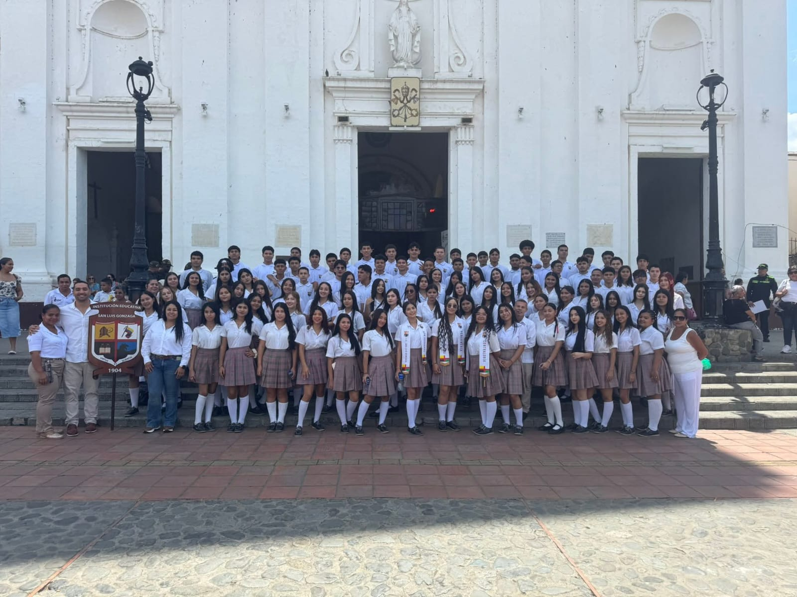

FORTALECIENDO LA PAZ Y LA CONVIVENCIA
Cumplimos una vez más la cita con la historia, ese encuentro que nos recuerda quiénes somos y de dónde venimos. Nuestros estudiantes, herederos del valor y la esperanza de quienes forjaron nuestra nación, llevarán en su mente y en su corazón el espíritu de patria y la pujanza que siempre nos ha caracterizado como pueblo. El hito de la independencia no solo marca un momento trascendental en nuestro pasado, sino que también nos invita, una y otra vez, a renovar nuestro compromiso con los valores de libertad, justicia y unidad. Hoy, más que nunca, comprendemos que la verdadera independencia se construye día a día, con esfuerzo, con conocimiento y con la firme convicción de que la educación es la base sobre la cual se edifica una sociedad libre y próspera. Que esta conmemoración sea una oportunidad para fortalecer en cada estudiante el amor por su país, el respeto por la historia y la responsabilidad de seguir escribiendo, con trabajo y dedicación, nuevas páginas de grandeza nacional. La libertad que celebramos es también la libertad de pensar, de aprender y de soñar con un futuro mejor para todos.
20 de Julio de 2025